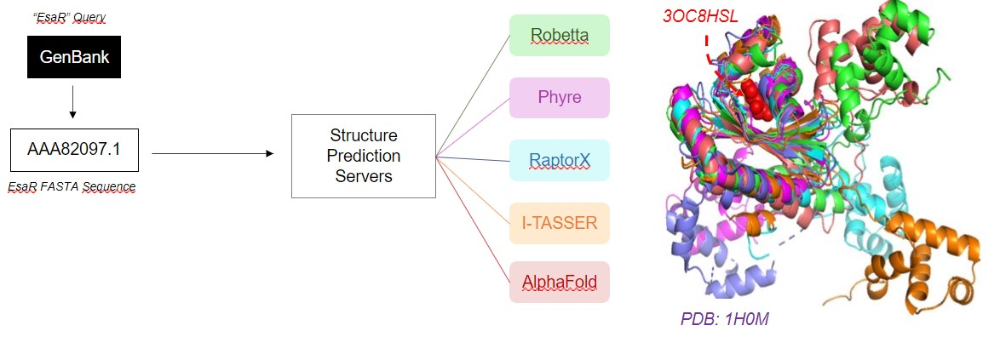
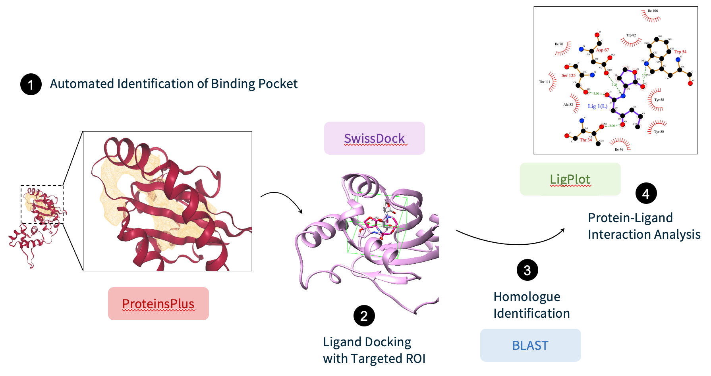
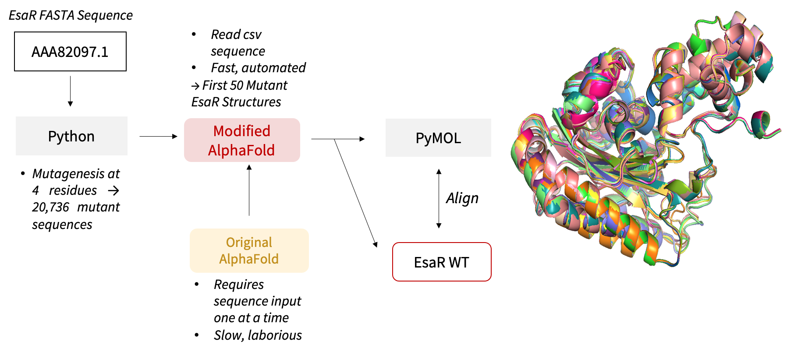

3D visualisation instructions
Use mouse to manipulate the 3D render.
To rotate: drag molecule to desired direction.
To zoom: scroll or hold shift + drag downwards to zoom in/upwards to zoom out.
To pan: hold ctrl + drag to desired direction.
To rotate: drag molecule to desired direction.
To zoom: scroll or hold shift + drag downwards to zoom in/upwards to zoom out.
To pan: hold ctrl + drag to desired direction.
1H0M
3D structure of all EsaR protein structure predictions

STRUCTURE PREDICTION
Structure prediction of EsaR was conducted using
RaptorX,
I-TASSER,
Phyre, and
Alphafold.
For I-TASSER, the EsaR homologue TraR was submitted as a template (PDB: 1H0M). After prediction, the obtained
conformations were aligned in PyMOL.

LIGAND DOCKING
SwissDock
server (Swiss Institute of Bioinformatics) was used to perform molecular docking of the cognate 3OC6HSL. We
restricted docking to a docking box enclosing the binding pocket which was identified by the cavity-detection
method provided by the DoGSiteScorer tool from the ProteinsPlus server.
The LigPlot tool was used to identify the interactions between the ligand and the EsaR predicted conformations, which were then compared to that of the ligand and protein crystal structures homologous to EsaR. These suitable homologous structures were selected by running a BLAST search and filtering the results bound to their respective cognate ligand available from the Protein Data Bank.


The LigPlot tool was used to identify the interactions between the ligand and the EsaR predicted conformations, which were then compared to that of the ligand and protein crystal structures homologous to EsaR. These suitable homologous structures were selected by running a BLAST search and filtering the results bound to their respective cognate ligand available from the Protein Data Bank.
MUTANT ANALYSIS
Python scripts were written to substitute the selected 4 residues with the 12 mutagenic NDT codons, generating
a total of 20,736 (124) mutants in a combinatorial process. Scripts were also written to perform
single-residue mutagenesis, substituting each of the 4 residues with the 20 amino acids and generating 80 (20
x 4) single-mutation sequences. DNA and residue mutant sequences were generated as input to downstream
prediction software.
AlphaFold codes were modified to read sequences stored in a .csv file instead of importing one sequence at a time, hence automating and accelerating the prediction. The structures of the first 50 mutants from the 20,736-mutant library were predicted to study the effect of the mutation on binding sites.
AlphaFold codes were modified to read sequences stored in a .csv file instead of importing one sequence at a time, hence automating and accelerating the prediction. The structures of the first 50 mutants from the 20,736-mutant library were predicted to study the effect of the mutation on binding sites.